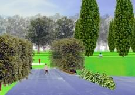

Le "stanze verdi" |
Dall’altro lato della viale principale il terreno in declivio verso il fiume Lambro, racchiuso dalle nuove urbanizzazioni, viene articolato in diversi spazi secondo una griglia regolare di base di 40x40m poi negata e variata da diverse eccezioni. Si mantiene leggibile e strutturante lo spazio dove diviene la trama per le “stanze verdi” che racchiudono i giardini di quartiere. I percorsi che servono le diverse attività risultano quindi affiancati e caratterizzati da doppi filari di queste diverse alberature: il viale dei ciliegi (Prunus padus L. e Prunus serrulata “Kanzan” Lindl.), il viale dei gelsi (Morus alba L.) e il viale dei meli (Malus floribunda Sieb.) |
Le terrazze e le piantate |
La differenza tra quota del viale e quella delle residenze è di circa 4,5 m per una larghezza media dell’area di 140 m. La pendenza è minore nella zona delle “stanze verdi” ed è risolta verso il fiume Lambro con dei gradoni larghi 5 metri a prato che sottolineano il declivio scandendo geometricamente la superficie. Sono necessari movimenti di terra per portare alla quota di progetto la zona ora modellata da un ciglione in terra.
La relazione visiva con le residenze viene mediata dalle alberature piantate secondo una griglia regolare di 10x10m di pioppi (Populus alba L.), salici (Salix alba L.) e ontani (Alnus glutinosa Gaer tn.) che si interrompe in corrispondenza di canali ottici che si aprono tra i blocchi residenziali |
L'arena |
La grande cavea dell’arena a gradoni verdi si inserisce nella griglia regolare di questa parte del parco interrompendola. La forma è un’ellisse con gli assi di 80 e 65 m con la scena (un’area circolare pavimentata) posizionata in uno dei due fuochi e le gradonate sviluppate sul perimetro opposto con lo spettatore con lo sguardo rivolto a Est,Nord-Est e Sud-est. La forma è sottolineata da querce fastigiate (Quercus robur “fastigiata” L.) piantate sul bordo superiore. I tre gradoni su cui sono collocate panche in listelli di legno e struttura metallica sono larghi 1,5 m con una differenza di quota di 0,75 m (complessivamente quindi di 3 m). La superficie a prato di raccordo tra i gradoni ha una pendenza del 60%e può essere realizzata con l’uso di stuoie antierosione e semina con teli preseminati. Gli accessi all’arena sono quattro: quello a nord affiancato da filari di meli (Malus florentina (Zucc.) Schneid.) tra due muri che tagliano i movimenti di terra, quello attraverso in percorso circolare tra il doppio filare di carpini (Carpinus betulus fastigiata L.) che discende al centro dell’arena e due attraverso scale che servono all’accesso ai gradoni. |
|
|
 |
il Parco dei Giganti |
| |
|  |
| |
 |
|